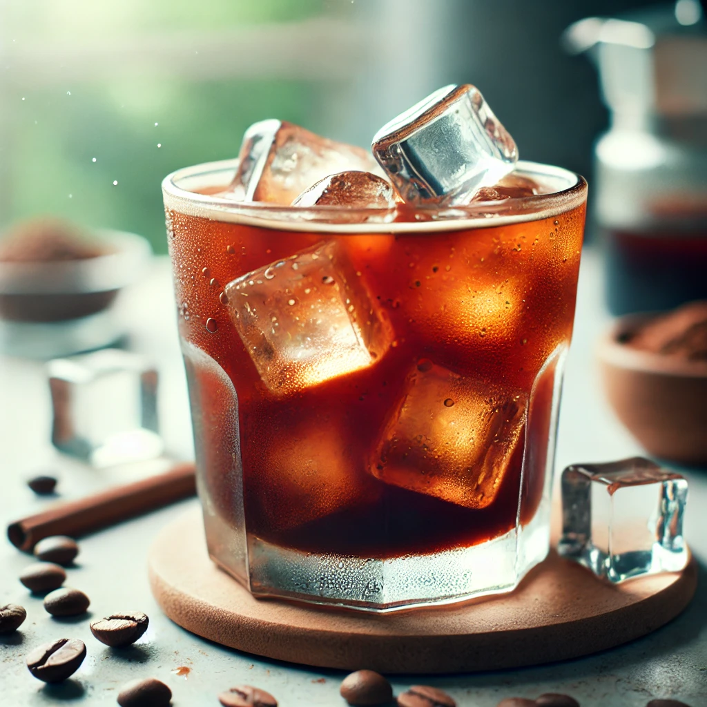

¿Que es el Café Frío?
Los cafés fríos son una opción refrescante para disfrutar de una dosis de energía en los días calurosos.
Recetas Destacadas
Comparativa de Tipos de Café
| Tipo de Café | Sabor | Cafeína (mg) | Precio (USD) |
|---|---|---|---|
| Cold Brew | Suave, menos ácido | 200 | 3.50 |
| Frappuccino | Dulce, cremoso | 95 | 4.50 |
| Iced Americano | Intenso, amargo | 150 | 2.50 |